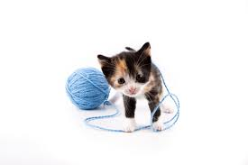
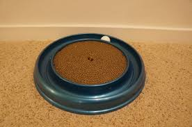
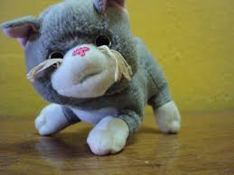
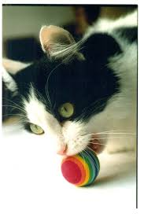
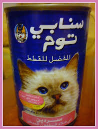
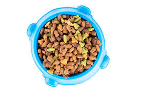

Cat Toys

Cat Yarn-This yarn is perfect for cats of all ages! It will keep your cat entertained for hours. In addition, it is blueberry scented.

'Round the World-This toy features a small ball that your cat can chase in a circle. It will tire your feline out for sure!

Cat Plush-This plush is perfect for a lonely cat. Your cat can cuddle with it or even meow at it!

Cat Ball-This ball has a bell in it. Every time your feline plays with it, it jingles!
Cat Food

Asian Cat Food-Our cashier Sadie has fed this to her cats ever since she spent a year in Japan. It has the perfect blend of proteins and nutrients to keep your cat happy and healthy.

Homemade Cat Food-This secret cat food recipe has been in our family since 1812. It is the best cat food blend on the planet!